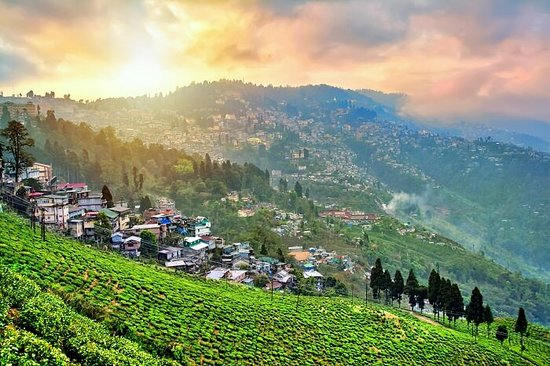

🌄 Darjeeling is famous for its breathtaking views of the Himalayas, including Kanchenjunga, the third-highest mountain in the world!
Darjeeling
🚂 Darjeeling's Toy Train, a UNESCO World Heritage site, offers a scenic and nostalgic ride through the hills.

Darjeeling
🍃 Darjeeling is world-renowned for its tea gardens, producing the famous Darjeeling tea with a unique taste and aroma.
Darjeeling
🙏 Darjeeling is home to several beautiful monasteries, reflecting its rich Tibetan Buddhist heritage.
🌲 DARJEELING – THE QUEEN OF THE HILLS
DARJEELING
Located in the northeastern part of India, Darjeeling is a hill station in the state of West Bengal, famous for its stunning views of the Himalayas, lush tea gardens, and colonial charm. The town is well-known for its Toy Train, which chugs along the mountain slopes and offers a scenic journey. Kanchenjunga, the third-highest peak in the world, towers over the town, providing breathtaking vistas. The peaceful atmosphere is complemented by Darjeeling tea, renowned worldwide for its unique flavor. With peaceful monasteries like the Yiga Choeling Monastery and the Himalayan Mountaineering Institute, Darjeeling is also a haven for culture and adventure. The best time to visit is from March to June and September to November, avoiding the monsoon season. Whether you're interested in tea tours, trekking, or simply soaking in the mesmerizing views, Darjeeling has something for every traveler!
Darjeeling attracts both domestic and international tourists who come for its cool weather, natural beauty, and rich culture. The famous Darjeeling Himalayan Railway is a UNESCO World Heritage Site, and trekking trails like Sandakphu offer panoramic views of the mountains. The town’s bustling Mall Road is lined with charming shops, restaurants, and local markets, offering a glimpse of the hill station's colonial past.
🌄 Scenic Views and Tea Gardens
Darjeeling's tea gardens are among the highest in the world. Visitors can explore the Happy Valley Tea Estate, one of the oldest, or simply enjoy the tranquil views from any of the many estates that dot the hills.